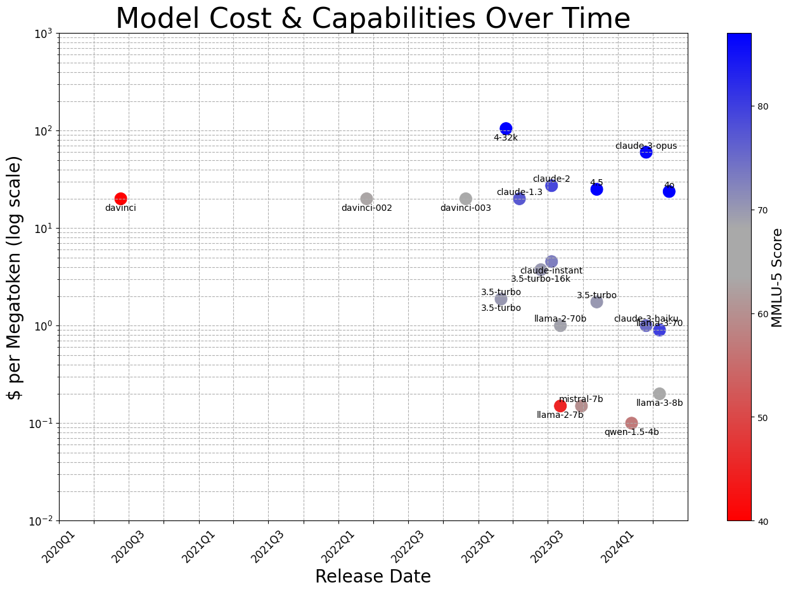

作者： Eugene Yan, Bryan Bischof, Charles Frye, Hamel Husain, Jason Liu & Shreya Shankar
原作发布日期：May 31, 2024
翻译：ian
最后修订日期：2024年10月6日
我们之前分享了在运作LLM应用时历经磨练所得的 战术 见解。战术是细粒度的：它们是为实现特定目标而采取的具体行动。我们还分享了我们对 运作 的看法：支持战术工作以实现更高层次目标的流程。
但这些目标从何而来？这就是 战略 的领域。战略回答了战术和运作背后的"是什么"和"为什么"问题。
我们提供了一些我们的主张，比如"在达到产品市场契合度之前不要使用GPU"和"专注于系统而非模型"，以帮助团队确定如何分配稀缺资源。我们还建议了一个从迭代到优秀产品的路线图。这最后一组经验教训回答了以下问题：
- 自建还是购买：何时应该训练自己的模型，何时应该利用现有的API？答案一如既往是"视情况而定"。我们分享了具体取决于哪些因素。
- 迭代到卓越：如何创造持久的竞争优势，而不仅仅是使用最新的模型？我们讨论了构建模型周围强大系统的重要性，以及专注于提供令人难忘、黏性强的体验。
- 以人为本的AI：如何有效地将LLM整合到人类工作流程中，以最大化生产力和幸福感？我们强调构建AI工具的重要性，这些工具应支持和增强人类能力，而不是试图完全取代它们。
- 起步：对于着手构建LLM产品的团队来说，有哪些基本步骤？我们概述了一个基本的行动方案，从提示工程、评估和数据收集开始。
- 低成本认知的未来：LLM成本的快速下降和能力的不断提升将如何塑造AI应用的未来？我们研究了历史趋势，并通过一个简单的方法来估计某些应用何时可能在经济上变得可行。
- 从演示到产品：从一个引人注目的演示到一个可靠、可扩展的产品需要什么？我们强调了严格的工程、测试和改进的必要性，以弥合原型和生产之间的差距。
为了回答这些困难的问题，让我们逐步思考…[1]
战略：构建不被淘汰的LLM应用
成功的产品需要深思熟虑的规划和严格的优先级排序，而不是无休止的原型开发或追随最新的模型发布或趋势。在这最后一部分，我们环顾四周，思考构建优秀AI产品的战略考量。我们还研究了团队将面临的关键权衡，比如何时自建、何时购买，并为早期LLM应用开发战略提出一个"行动方案"。
PMF[2]之前不需要GPU
要想成功，你的产品不能仅仅是别人API的一层薄薄的套壳，但反向的错误可能会代价高昂。过去一年，我们也看到了大量风险投资，包括令人瞠目结舌的60亿美元A轮融资，被用于训练和定制模型，却没有明确的产品愿景或目标市场。在本节中，我们将解释为什么立即跳到训练自己的模型是一个错误，并考虑自主托管的作用。
从头开始训练（几乎）从来都不合理
对于大多数组织来说，从头开始预训练LLM是一种不切实际的、偏离构建产品的做法。
尽管它令人兴奋，而且似乎每个人都在这么做，但开发和维护机器学习基础设施需要大量资源。这包括收集数据、训练和评估模型以及部署它们。如果你仍在验证PMF（产品市场契合度）阶段，这些努力会分散开发核心产品的资源。即使你拥有计算能力、数据和技术实力，预训练的LLM可能在几个月内就会过时。
考虑BloombergGPT的案例，这是一个专门为金融任务训练的LLM。该模型在363B个标记上进行了预训练，需要九名全职员工的巨大努力，其中四名来自AI工程部门，五名来自ML产品和研究部门。尽管付出了这么多努力，它在一年内就在这些金融任务上被gpt-3.5-turbo和gpt-4超越了。
这个案例和其他类似案例表明，对于大多数实际应用来说，从头开始预训练LLM，即使是在特定领域的数据上，也不是资源的最佳利用。相反，团队最好是对现有的最强大的开源模型进行微调，以满足他们的特定需求。
当然也有例外。一个出色的例子是Replit的代码模型，专门为代码生成和理解而训练。通过预训练，Replit能够在性能上超越其他大型模型，如CodeLlama7b。但随着其他越来越强大的模型不断发布，保持其实用性需要持续投资。
不要微调，直到你证明了有其必要
对于大多数组织来说，微调更多是由于害怕错过（FOMO）而不是清晰的战略思考驱动的。
不少组织过早地投资于微调，试图打破"只是另一个包装"的指责。事实上，微调是个重型机械，只有在收集了大量令你确信其他方法不足的例子之后才应该部署。
一年前，许多团队告诉我们他们对微调感到兴奋。后来，很少有团队找到了产品市场契合度，大多数团队后悔他们的决定。如果你要进行微调，你最好真的有信心能够随着基础模型的改进而一次又一次地进行微调 —— 参见下面的"模型不是产品"和"构建LLMOps"部分。
什么时候微调才是真正正确的选择？如果在用于训练现有模型的大多数开放网络规模的数据集中，没有适用于你的用例需要的数据；并且如果你已经构建了一个最小可行产品（MVP），证明现有模型不足以满足需求 —— 此时，才是选择微调的正确时机。但要小心：如果优质的训练数据对模型构建者来说不容易获得，那么 你 又从哪里获得它呢？
最终，请记住，由LLM驱动的应用程序并不是科研探索项目；对它们的投资应该与它们对你企业战略目标和竞争优势的贡献相称。
从推理API开始，但不要害怕自主托管
有了LLM API，创业公司比以往任何时候都更容易采用和集成语言建模能力，而无需从头开始训练自己的模型。像Anthropic和OpenAI这样的提供商提供通用API，只需几行代码就可以为你的产品注入智能。通过使用这些服务，你可以减少所花费的精力，转而专注于为客户创造价值 —— 这使你能够更快地验证想法并朝着产品市场契合度迭代。
但是，就像数据库一样，托管服务并不适合每一种用例，尤其是当规模和需求增加时。事实上，自主托管可能是在不将机密/私人数据发送出网络的情况下使用模型的唯一方法，这在医疗保健和金融等受监管行业中是必需的，或者是合同义务或保密要求所要求的。
此外，自主托管可以绕过推理服务提供商施加的限制，如速率限制、模型弃用和使用限制。另外，自主托管让你对模型有完全的控制权，使得围绕它构建差异化的高质量系统变得更加容易。最后，自主托管，特别是对于微调模型，可以在大规模应用时降低成本。例如，BuzzFeed分享了他们如何通过微调开源LLM将成本降低80%。
迭代至卓越
要长期保持竞争优势，你需要超越模型本身，考虑是什么让你的产品与众不同。虽然执行速度很重要，但它不应该是你唯一的优势。
模型不是产品；围绕它的系统才是
对于不构建模型的团队来说，快速的创新步伐是一个福音，因为他们可以从一个最先进的模型迁移到下一个，追求上下文大小、推理能力和价值比的提升，从而构建越来越好的产品。
这样的进展既令人兴奋又可预测。总的来说，这意味着模型可能是系统中最不持久的组件。
相反，将你的精力集中在能够提供持久价值的方面，例如：
- 评估框架(Evaluation chassis)：可靠地衡量不同模型在你的任务上的表现
- 安全护栏(Guardrails)：无论使用哪种模型都能防止不期望的输出
- 缓存(Caching)：通过避免完全使用模型来减少延迟和成本
- 数据飞轮(Data flywheel)：驱动上述所有方面的迭代改进
这些组件比原始模型能力创造了一道更厚实的产品质量护城河。
但这并不意味着在应用层构建是没有风险的。OpenAI或其他模型提供上会顾及企业需求而提供一些功能，不要将你的精力花在解决的同样问题上。
例如，一些团队投资于构建自定义工具来验证专有模型的结构化输出；在这方面进行最小限度的投资很重要，但深入投资反而浪费时间。OpenAI需要确保当你请求函数调用时，你能得到一个有效的函数调用 —— 因为他们所有的客户都需要这个。在这里采用一些"战略性拖延"，只构建你绝对需要的东西，并等待供应商提供的这显而易见的功能的扩展。
逐步确立信任
试图成为一切的产品往往会导致平庸。要创造引人注目的产品，公司需要专注于打造令人难忘、具有粘性的体验，让用户不断回访。
请看一个旨在回答用户可能提出的任何问题的通用RAG系统：缺乏专业化意味着该系统无法优先处理最新信息、解析特定领域的格式、或理解特定任务的细微差别。结果，用户得到的是一种浅显、不可靠的体验，无法满足他们的需求。
为了解决这个问题，请专注于特定领域和用例。通过深入而非广泛来缩小范围。这将创造出能引起用户共鸣的特定领域工具。专业化还允许你坦诚地说明系统的能力和局限性。对系统能做什么和不能做什么保持透明，展示了自我意识，帮助用户理解系统在哪里能带来最大价值，从而建立对输出的信任和信心。
构建LLMOps —— 为了正确的理由：快速迭代
DevOps 的本质并不在于可重复的工作流程、左移或赋能两个披萨团队——它绝对不是关于编写 YAML 文件的。
DevOps 的核心是缩短工作与其成果之间的反馈周期，使改进能够累积而非错误。它的根源可以通过精益创业运动追溯到精益制造和丰田生产系统，强调快速换模和持续改进（Kaizen）[3]。
MLOps采用了DevOps的形式应用于机器学习。我们有可重复的实验，有赋能模型构建者进行部署的一体化套件。天哪，我们还有大量的YAML文件。
但作为一个行业，MLOps并没有继承DevOps的功能。它没有缩短模型及其在生产中的推理和交互之间的反馈差距。
令人欣慰的是，LLMOps领域已经从纠结于像提示管理这样的小问题转向了那些阻碍迭代发展的难题：生产监控和持续改进，这些都通过评估紧密相连。
我们已经有了交互式平台，用于中立、众包的聊天和编码模型评估 —— 这是一个集体、迭代改进的外循环。像LangSmith、Log10、LangFuse、W&B Weave、HoneyHive等工具不仅承诺收集和整理生产系统结果的数据，还通过与开发深度集成来利用这些数据改进系统。请拥抱这些工具，或者自己动手打造。
别自己造那些能买到的LLM功能
大多数成功的企业并非 LLM 企业。同时，大多数企业都有机会通过 LLM 得到改进。
这对观察结果常常误导领导者仓促地将系统与LLM结合，以增加成本和降低质量的方式推出所谓的“AI”功能，还配上那个令人心生敬畏的Sparkle图标[4]。其实，有一个更好的方法：专注于真正与你的产品目标一致并能增强核心业务的LLM应用。
请看几个浪费你团队时间的错误尝试：
- 为你的业务构建自定义的text-to-SQL功能
- 构建一个聊天机器人来与你的文档对话
- 将公司知识库与客户支持聊天机器人集成
虽然上述内容是LLM应用的入门级示例，但几乎没有任何产品公司有必要自己构建这些功能。这些都是许多企业面临的普遍问题，从令人兴奋的演示到可靠的组件之间存在巨大差距 —— 这通常是软件公司的专属领域。将宝贵的研发资源投入到当前 Y Combinator 批次正在大规模解决的普遍问题上是一种浪费。
如果这听起来像是陈词滥调的商业建议，那是因为在当前炒作热潮的泡沫中，很容易将任何与“LLM”相关的东西误认为是前沿的差异化优势，而忽视了哪些应用已经成为老生常谈。
AI参与其中；人类处于中心
目前，由LLM驱动的应用程序仍然很脆弱。它们需要大量的安全防护和防御性工程，而且仍然难以预测。不过，当范围明确时，这些应用程序可能会非常有用。这意味着LLM是加速用户工作流程的出色工具。
虽然想象中基于大型语言模型（LLM）的应用完全取代工作流程或替代某个职位很诱人，但今天最有效的范式还是人机结合的"半人马"模式（参见半人马象棋）。当能力出众的人类与为快速应用而优化的LLM能力相结合时，完成任务的生产力和满足感可大幅提升。LLM的旗舰应用之一，GitHub Copilot就展示了这种工作流程的强大力量：
“总的来说，开发者们告诉我们，相比不使用这些工具，使用GitHub Copilot和GitHub Copilot Chat进行编程时，他们感到更有信心，因为代码变得更简单、更少错误、更易读、更可复用、更简洁、更易维护，也更具韧性。”
—Mario Rodriguez，GitHub
对于那些长期从事机器学习工作的人来说，你可能会立即想到“human-in-the-loop”的概念，但别急：HITL的机器学习是一种由人类专家确保机器学习模型按预期行为的范式。虽然两者有关联，但我们在这里提出的是一种更加微妙的理念。如今，由LLM驱动的系统不应成为大多数工作流程的主要驱动力；它们应该仅仅作为一种资源存在。
以人为本，思考如何让大型语言模型支持他们的工作流程，这会带来截然不同的产品设计和决策。最终，这将促使你打造出与那些试图迅速将所有责任推给大型语言模型的竞争对手不同的产品 —— 更好、更有用、风险更低的产品。
从提示词、评估、数据收集起步
前面的章节提供了大量的技术和建议，信息量很大。让我们考虑一下最基本的有用建议：如果一个团队想要构建一个LLM产品，他们应该从哪里开始？
在过去的一年里，我们已经看到了足够多的例子，开始有信心认为成功的LLM应用遵循一致的轨迹。我们在本节中将介绍这个基本的"入门"指南。核心理念是从简单开始，只在需要时增加复杂性。一个不错的经验法则是，每一个复杂程度通常需要比前一个至少多一个数量级的努力。考虑到这一点…
提示工程是起点
从提示工程开始。使用我们之前在战术部分讨论的所有技巧。思维链、n-shot示例，以及结构化输入和输出几乎总是一个好主意。在尝试从较弱的模型中榨取性能之前，先用最高性能的模型进行原型设计。
只有在提示工程无法达到所需性能水平时，才应考虑微调。我们也经常遇到一些非功能性需求（例如，数据隐私、完全控制和成本）阻碍我们使用专有模型，从而需要自行托管。而执行微调，仅需确保这些隐私要求不会阻止微调时使用那些用户数据！
构建评估并启动数据飞轮
即使是刚刚起步的团队也需要评估。否则，你将无法知道你的提示工程是否足够，或者你的微调模型何时准备好取代基础模型。
有效的评估是针对你的特定任务并反映预期使用场景的。我们推荐的第一级评估是单元测试。这些简单的断言可以检测已知或假设的故障模式，并有助于推动早期设计决策。另请参阅其他针对分类、摘要等特定任务的评估。
虽然单元测试和基于模型的评估很有用，但它们并不能取代人工评估的必要性。让人们使用你的模型/产品并提供反馈。这有双重目的：一方面测量实际性能和缺陷率，另一方面收集可用于微调未来模型的高质量标注数据。这创造了一个正反馈循环，或称数据飞轮，随着时间推移会产生复合效应：
- 使用人工评估来评估模型性能和/或发现缺陷
- 使用标注数据来微调模型或更新提示
- 重复以上步骤
例如，在审核LLM生成的摘要以查找缺陷时，我们可能会对每个句子进行细粒度的反馈标注，识别事实不一致、无关性或不良风格。然后，我们可以使用这些事实不一致的标注来训练一个幻觉分类器，或使用相关性标注来训练一个用于评分相关性的奖励模型。另一个例子是，LinkedIn在其文章中分享了使用基于模型的评估器来估计幻觉、负责任AI违规、连贯性等方面的成功经验。
通过创建这样可以随时间推移复合式增值的资产，我们构建的评估将从一个单纯的运营开销升级为一个战略级投资成果，并在此过程中构建出我们的数据飞轮。
关于低成本认知的战略发展趋势
1971年，施乐帕洛阿尔托研究中心（Xerox PARC）的研究人员预见了未来：一个我们现在正在生活的网络化个人电脑世界。他们在使这一切成为可能的技术发明中扮演了关键角色，帮助孕育了这个未来，这些发明从以太网和图形渲染到鼠标和窗口。
但他们还进行了一个简单的练习：他们观察了一些非常有用（例如，视频显示）但尚未足够经济实惠（足以驱动视频显示所需的RAM成本高达数千美元）的技术应用。然后，他们根据该技术的价格历史趋势（类似于摩尔定律）预测了这些技术何时会变得经济实惠。
我们可以对LLM技术做同样的事情，尽管我们没有像每个晶体管多少美元这样清晰的指标可以使用。以一个流行的、长期存在的基准为例，比如大规模多任务语言理解数据集，并采用一致的输入方法（五轮示例提示）。然后，比较随时间推移在这个基准测试上运行不同性能水平的语言模型的成本。

在固定成本下，能力正在迅速提升。在固定能力水平下，成本正在迅速下降。由合著者Charles Frye使用2024年5月13日的公开数据创建。
自OpenAI的davinci模型作为API推出以来的四年里，运行一个在该任务上具有同等性能的模型的成本（以一百万个token为规模，相当于本文档的大约一百份副本）已从20美元下降到不到10美分——每六个月就减半一次。同样，截至2024年5月，通过API提供商或自行运行Meta的LLama 3 8B的成本仅为每百万token 20美分，其性能与OpenAI的text-davinci-003相似，后者是使ChatGPT震惊世界的模型。该模型在2023年11月底发布时，每百万token的成本也约为20美元。这仅仅18个月就降低了两个数量级——在同样的时间框架内，摩尔定律预测的仅仅是翻倍。
现在，让我们考虑一个非常有用但尚未经济实惠的LLM应用（为生成式视频游戏角色提供动力，类似于Park等人的研究）。（他们的成本在这里估计为每小时625美元。）自该论文于2023年8月发表以来，成本已经大约降低了一个数量级，降至每小时62.50美元。我们可以预期在接下来的九个月内，它可能会进一步降至每小时6.25美元。
与此同时，当吃豆人（Pac-Man）在1980年发布时，按今天的货币价值计算，1美元可以买到一次游戏机会，足够玩几分钟或几十分钟——假设每小时可以玩六次游戏，相当于每小时6美元。这种粗略计算表明，一个引人入胜的LLM增强型游戏体验可能会在2025年左右变得经济实惠。
这些趋势还很新，只有几年的历史。但几乎没有理由认为这一过程在未来几年会放缓。即使我们可能在算法和数据集层面难以突破[5]，比如scaling已经超越了“Chinchilla比例”（每参数约20个token）[6]，但数据中心和芯片技术的更深层次的创新和投资有望按此预测继续推进。
而这或许是最重要的战略事实：今天完全不可行的底层技术演示或研究论文，几年后将成为高端功能，随后很快就会成为大众商品。我们应该以此为出发点来构建我们的系统和组织。
从0到1的演示够了，现在是时候推出1到N的产品了
We get it；搭建大型语言模型（LLM）演示确实很有趣。只需几行代码、一个向量数据库和精心设计的提示，我们就能创造出✨魔法✨。在过去的一年里，这种魔法被拿来与互联网、智能手机甚至印刷机相提并论。
不幸的是，正如任何参与过实际软件开发的人所知，在受控环境下运行的演示与能够可靠大规模运行的产品之间存在着巨大的差距。
以自动驾驶为例。第一辆由神经网络驱动的汽车出现在1988年。二十五年后，Andrej Karpathy 首次体验了Waymo的演示乘车。又过了十年，该公司获得了无人驾驶许可。从原型到商业产品，这花费了三十五年的严谨工程、测试、改进和监管协调。
在过去的一年里，我们在工业和学术界的不同领域都敏锐地观察到了起起落落：这是LLM应用的第一年。我们希望我们所学到的经验教训 —— 从严谨的团队建设的操作技术等战术，到内部应构建哪些能力等战略视角 —— 能够在第二年及以后帮助到你们，因为我们都在共同构建这一激动人心的新技术。
关于作者
Eugene Yan 设计、构建和运营为大规模客户服务的机器学习系统。他目前是亚马逊的高级应用科学家，在亚马逊他构建了服务于全球数百万客户的推荐系统RecSys 2022主题演讲，并应用LLM来更好地服务客户AI Eng Summit 2023主题演讲。此前，他在Lazada（被阿里巴巴收购）和一家医疗科技 A 轮公司领导机器学习工作。他在eugeneyan.com和ApplyingML.com上撰写和讨论有关ML、RecSys、LLM和工程的内容。
Bryan Bischof 是 Hex 的 AI 负责人，他领导着一支工程师团队构建 Magic —— 一个数据科学和分析的Copilot应用。Bryan在数据相关技术栈的各个领域都有工作经验，领导过分析、机器学习工程、数据平台工程和AI工程团队。他在 Blue Bottle Coffee 创建了数据团队，在 Stitch Fix 领导了几个项目，并在 Weights and Biases 构建了数据团队。Bryan 此前与 O’Reilly 合著了《构建产品推荐系统》一书，并在罗格斯大学研究生院教授数据科学和分析。他的博士学位是纯数学。
Charles Frye 教人们构建AI应用。在发表了精神药理学和神经生物学的研究成果后，他在加州大学伯克利分校获得了博士学位，研究方向为神经网络优化。他已经教授了数千人 AI 应用开发的全栈知识，从线性代数基础到GPU的深奥知识，以及构建可防御的业务，并在Weights and Biases、Full Stack Deep Learning 和 Modal 从事教育和咨询工作。
Hamel Husain 是一位拥有超过25年经验的机器学习工程师。他曾在 Airbnb 和 GitHub 等创新公司工作，其中包括一些早期的LLM研究被 OpenAI 采用，用于代码理解。他还领导并贡献了许多流行的开源机器学习工具。Hamel 目前是一名独立顾问，帮助公司将大型语言模型（LLMs）投入运营，以加速他们的AI产品开发进程。
Jason Liu 是一位杰出的机器学习顾问，以领导团队成功交付AI产品而闻名。Jason 的技术专长涵盖个性化算法、搜索优化、合成数据生成和 MLOps 系统。他的经验包括在 Stitch Fix 等公司工作，在那里他创建了一个推荐框架和可观测性工具，每天处理3.5亿次请求。他还在Meta、纽约大学以及 Limitless AI 和 Trunk Tools 等初创公司担任过其他职务。
Shreya Shankar 是加州大学伯克利分校的机器学习工程师和计算机科学博士生。她是两家初创公司的第一位机器学习工程师，从零开始构建每日服务于数千用户的AI驱动产品。作为研究员，她的工作专注于通过以人为中心的方法解决生产环境中机器学习系统的数据挑战。她的研究成果已在VLDB、SIGMOD、CIDR和CSCW等顶级数据管理和人机交互会议上发表。
联系我们
我们非常希望收到您对这篇文章的想法。您可以通过 contact@applied-llms.org 与我们联系。我们中的许多人都愿意提供各种形式的咨询和建议。如果合适的话，我们会在您与我们联系后将您转介给相应的专家。
致谢
这个系列文章始于一次群聊中的对话，Bryan 开玩笑说他受到启发要写"一年的 AI 工程"。然后，✨魔法✨在群聊中发生了，我们都受到启发，决定一起贡献并分享我们迄今为止所学到的东西。
作者们感谢 Eugene 领导了文档整合和整体结构的大部分工作，以及大部分课程内容。此外，还要感谢他承担主要编辑责任和文档方向。作者们感谢 Bryan 提供了促成这篇文章的灵感，将文章重组为战术、运营和战略部分及其介绍，并推动我们思考如何更好地接触和帮助社区。作者们感谢 Charles 对成本和 LLMOps 的深入探讨，以及将课程编织得更加连贯和紧凑 —— 你应该感谢他让这篇文章只有30页而不是40页！作者们感谢 Hamel 和 Jason 从客户咨询和前线工作中获得的洞见，从客户那里学到的广泛可推广的知识，以及对工具的深入了解。最后，感谢 Shreya 提醒我们评估和严格生产实践的重要性，并将她的研究和原创成果带入这篇文章。
最后，作者们感谢所有在文章中慷慨分享挑战和经验教训的团队，我们在整个系列中都引用了这些内容，同时也感谢 AI 社区对本团队的积极参与和互动。
译注
let’s think step by step 是大语言模型的经典提示词。 ↩︎
PMF(Product Market Fit)产品市场契合度，指产品与市场需求之间的匹配程度。 ↩︎
DevOps 的灵感来自于精益制造和丰田生产系统。精益制造是一种让生产过程更高效的方法，而丰田生产系统是精益制造的一个很好的例子。丰田公司通过不断的小改进（Kaizen）和快速更换模具（Single Minute Exchange of Die）来提高生产效率。 ↩︎
Sparkle 图标 ，有时是一个点亮火花的魔法棒或者是一个🌟状的icon。一些公司在推出所谓的“AI”功能时，会在产品上加上这个闪闪发光的图标，以吸引用户的注意力。 ↩︎
“Even as we perhaps use up low-hanging fruit in algorithms and datasets”, 原文是：尽管我们可能已用尽了算法和数据集上的低垂果实。译文采用意译。 ↩︎
Chinchilla 比例是指在自然语言处理（NLP）领域中 Chinchilla 模型在训练计算利用率方面的优化比例。具体来说，Chinchilla 模型通过优化参数数量和训练 tokens 的比例，实现了更高的计算效率和性能。Chinchilla 是一种小型啮齿动物，其体型较小。参考论文地址：Training Compute-Optimal Large Language Models ↩︎
Comments